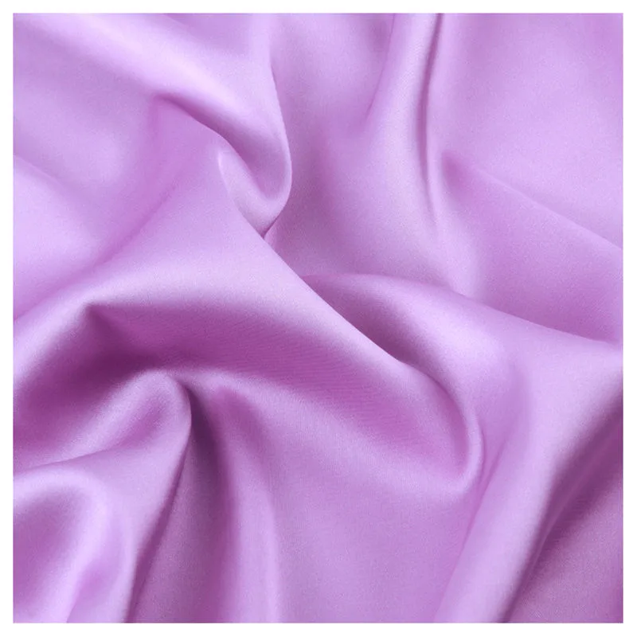
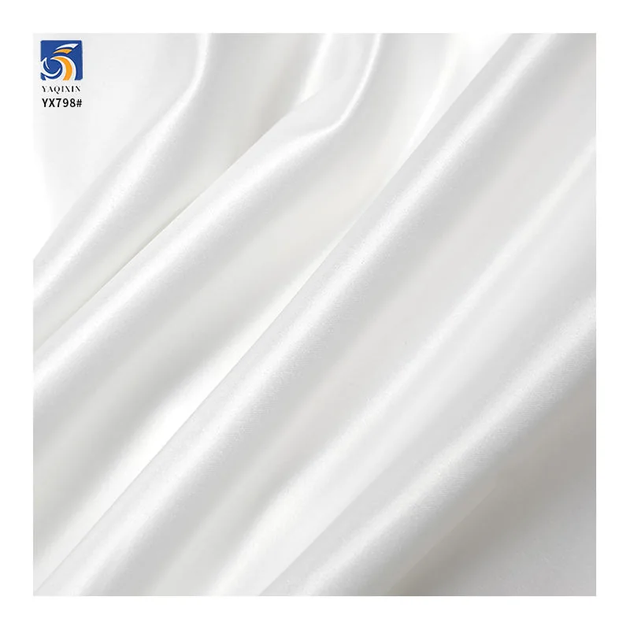
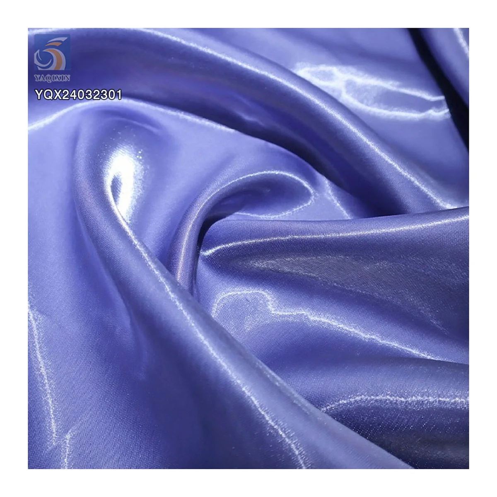

Satin is not one fixed fabric specification. Two products can both be sold as satin while behaving very differently in a structured bridal gown, a bias-cut dress, sleepwear or high-shine occasionwear. For a useful comparison, buyers need to look beyond the word "satin" and review the construction, composition, weight, stretch, surface character, width and intended garment route.
A strong sourcing brief explains whether the garment must hold shape, follow the body, reduce reflected light or create a liquid high-gloss effect. That decision usually separates Mikado, stretch, matte and liquid satin more effectively than color alone.
Why satin types feel different
The satin name usually describes a smooth-faced fabric family, but commercial satin types combine different yarns, weights, constructions and finishes. The result affects body, drape, stretch, opacity, surface reflection and sewing behavior. A buyer should therefore compare measurable specifications and a physical sample instead of assuming all satin with a similar photograph will perform the same way.
Start the brief with the finished silhouette. A structured formal dress needs enough body to support seams and shape. A fitted or movement-led garment may need stretch and recovery. A bridal or formalwear program may prefer a quieter, controlled surface. A dramatic party dress may intentionally use a fluid, mirror-like shine. Once the target effect is clear, the product route becomes easier to narrow.
Mikado satin for structure
Mikado satin is commonly selected when the garment needs more body and a defined silhouette. It can support structured skirts, architectural folds, formal dresses and bridal shapes where the fabric should not collapse into a very soft drape. Weight matters, but buyers should also assess the yarn specification, thickness, surface texture and how the sample responds to pressing and seaming.

thickened Mikado satin | YX920 is listed as 100% polyester, 270gsm, 500D and 150cm wide, with a 10-yard MOQ. Its current product route is structured dresses and formalwear. Those figures make it a useful comparison point for a firm satin, but buyers should still approve the exact champagne-ivory tone and drape from a physical sample.
For Mikado, test whether the fabric creates the desired fold without looking excessively stiff. Review seam bulk, needle marks, pressing response and the appearance of the surface after handling. If a design uses large panels, confirm usable width and shade continuity before bulk cutting.
Stretch satin for movement
Stretch satin is a more suitable starting route when the garment must move with the body or fit closer to it. The amount of spandex in the composition is useful information, but it does not replace a recovery test. Buyers should confirm the stretch direction, extension, return to shape and whether the sheen changes when the fabric is pulled.

stretch charmeuse satin | YX30 is listed as 92% polyester and 8% spandex, 105gsm and 150cm wide, with a 10-yard MOQ. It is positioned for sleepwear, dresses and pillow covers. Compared with a heavy structured satin, this route is lighter and more movement-led, so the sample should be evaluated on the intended pattern direction and lining combination.
Ask the supplier whether the stretch is one-way or multi-directional and test a sewn sample, not only an uncut swatch. For fitted dresses or sleepwear, check recovery after repeated extension, seam appearance, opacity under tension and comfort against the body.
Matte satin for controlled sheen
Matte satin is used when a designer wants the smooth hand and formal character of satin with a quieter surface than a high-gloss option. "Matte" is still a relative description: lighting, color, angle and finishing can change how much the surface reflects. Buyers should compare the sample under the lighting expected for photography, retail display or the final event.

white matte satin | YX693-2 is listed as 100% polyester, 160gsm, 150cm wide and made with a 50*300D yarn specification. Its MOQ is 10 yards. This middle-weight route can be considered when a bridal or formalwear brief needs a cleaner, more controlled surface than liquid satin without moving into the heavier body of thickened Mikado.
For white or light-colored matte satin, place the sample over the intended lining and underlayer. Check opacity, color cast, surface marks, drape and how the fabric looks in both diffuse and direct light. These checks matter because a surface described as matte can still show highlights along folds.
Liquid satin for fluid shine
Liquid satin is selected for a fluid drape and strong reflective surface. It can create dramatic highlights as the garment moves, making it relevant to party dresses, eveningwear and occasionwear. That same high-gloss character can also show wrinkles, handling marks and construction details more clearly, so the garment process must be considered early.

black liquid satin | YXQ24032301 is listed as 100% polyester, 150gsm and 150cm wide, with a 10-yard MOQ for party dresses and occasionwear. Its product description emphasizes a fluid drape and high-gloss surface. A buyer should sample it with the intended seam, hem and lining because reflective surfaces can make construction choices more visible.
Compare the specification before ordering
Product photographs help identify the visual direction, but they cannot confirm hand feel, recovery, opacity or sewing behavior. Before approving a satin for bulk production, record the points below in the sample review and purchasing documents. The fabric GSM guide explains how to read weight together with construction, while the sample inspection checklist turns those observations into an approval record.
- Composition, construction, fabric weight and any yarn specification supplied.
- Usable width after selvage and the width required by the marker or large garment panels.
- Stretch direction, extension and recovery where movement is required.
- Surface character under diffuse light, direct light and photography.
- Drape, body, opacity and compatibility with the intended lining.
- Seam, needle, pressing, wrinkle and handling response in a sewn sample.
- Color approval method, shade continuity, MOQ, packing and delivery destination.
Map the brief to a satin route
The following comparison uses current YAQIXIN catalog products as sourcing examples. It is designed to narrow the first sample request; final suitability still depends on the garment pattern, finishing process and approved physical sample.
| When the brief needs | Catalog example | Listed specification | Priority sample check |
|---|---|---|---|
| Firm body and structured formal silhouettes | Mikado satin | YX920 | 100% polyester, 270gsm, 500D, 150cm | Body, seam bulk, pressing and fold definition |
| Soft drape with movement and stretch | stretch charmeuse | YX30 | 92% polyester / 8% spandex, 105gsm, 150cm | Stretch direction, recovery and opacity under tension |
| Smooth formal surface with controlled sheen | matte satin | YX693-2 | 100% polyester, 160gsm, 50*300D, 150cm | Color cast, opacity and reflection under lighting |
| Fluid drape with dramatic high gloss | liquid satin | YXQ24032301 | 100% polyester, 150gsm, 150cm | Handling marks, seam visibility and motion highlights |
For a useful quotation, send the garment application, target satin type, color, width, quantity, destination and required delivery date. Include a reference garment or fabric swatch when the required level of sheen, body or stretch is difficult to describe in words.
Buyer questions
Is Mikado satin always heavier than other satin?
Mikado is generally selected for more body and structure, but product weights and constructions vary. Compare the actual gsm, yarn information and physical sample rather than relying on the trade name alone.
What is the main difference between matte and liquid satin?
The practical difference is the intended surface effect and drape. Matte satin aims for a more controlled reflection, while liquid satin emphasizes fluid movement and high gloss. Lighting and color affect both, so samples should be compared in the real use environment.
Is stretch satin suitable for fitted dresses?
It can be, when the stretch direction, recovery, opacity and seam performance match the pattern. Test the sample in the intended cut direction and with the planned lining before bulk approval.
What information should be included in a satin inquiry?
Share the end use, preferred satin route, composition or stretch requirement, target weight, color, width, order quantity, destination and delivery schedule. A reference image or approved swatch makes the comparison more precise.
Ready to discuss a fabric brief?
Share your intended application, a reference image or swatch, quantity, and market. We can help you compare a stock or custom fabric route before you place a bulk order.
Start a fabric inquiry